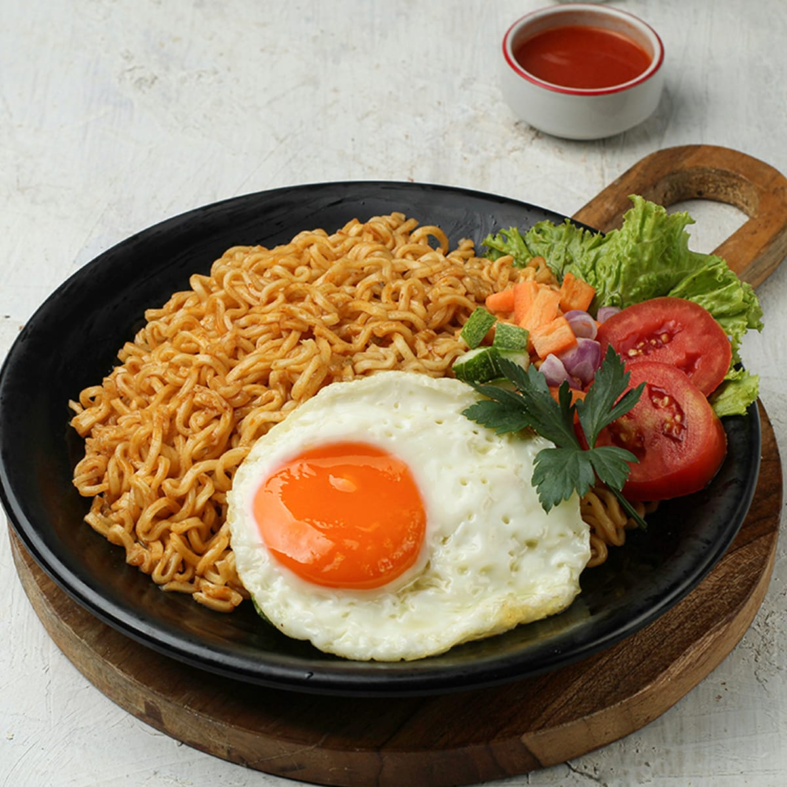

INDOMIE

Description
This is one of my favorite fast dishes to eat!
I tried them when my sister brought some back to
the states.
Ingredients
- green onions, 1/4 cup
- Indomie, 1 package
- water, 2/3 cup
Steps
- Grab a medium sized pan.
- Bring water to a boil.
- Add in indomie noodles, set packets to the side
- While indomie is cooking, mix contents of packets into a bowl.
- Once indomie is cooked to your liking, I enjoy mine al dente, strain.
- Add indomie into bowl you mixed packets in.
- Stir until noodles are coated.
- Top with green onions.